▲ 성문에 미디어 조명이 켜지는 야간의 해미읍성 사진=한국관광공사(과거 축제 현장)
10월 9일(금)부터 11일(일)까지 사흘간 충남 서산 해미읍성 일원에서 제23회 서산해미읍성축제가 열린다. 올해 주제는 "HAEMI UNIVERSE : 1421, 시간의 문이 열리다"로, 읍성 전체를 몰입형 역사 테마파크처럼 꾸민다는 계획이다. 입장은 무료다. 지난 회차 방문객은 보도 기준 2023년 20회 약 25만 명, 2024년 21회 약 27만 명(4일간), 2025년 22회 약 20만 9천 명으로, 해마다 20만 명 안팎이 몰린 만큼 자차로 가면 주차와 동선이 가장 큰 변수가 된다. 올해는 9일이 한글날(공휴일)이어서 금~일 사흘 연휴와 겹친다. 다만 이 글을 쓰는 시점(10월 5일)까지 서산시 문화관광 페이지와 지역 언론 보도에서 주차장별 수용 대수와 요금, 임시주차 학교 위치, 셔틀 노선, 교통통제 구간은 확인하지 못했다(공식 누리집 haemifest.com은 접속이 되지 않아 열람하지 못했다). 확인된 것(일정·프로그램·셔틀 대수·안전 인력)과 확인하지 못한 것을 나눠 적고, 자차 방문 요령은 일반적인 판단으로 정리했다. 간월암·해미읍성 물때 정보는 서산 간월암과 해미읍성 물때 가이드에서 다뤘으므로 이 글은 '축제 기간 방문'에 집중한다.
1. 한눈에 보기 — 일정과 기본 정보
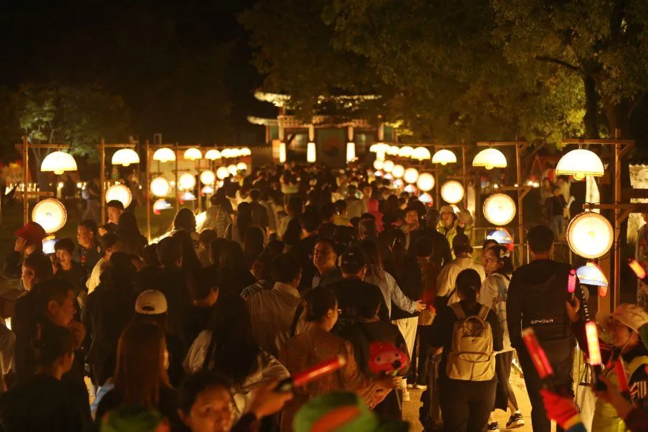
▲ 해가 진 뒤 등불 아래로 인파가 이어지는 야간의 읍성. 축제의 절정은 밤이다. 사진=한국관광공사(과거 축제 현장)
서산시가 주최하고 서산문화재단이 운영한다. 충남관광·한국관광공사 축제 정보와 보도를 종합하면 기본 정보는 아래와 같다. 운영 시간은 한 여행 정보 사이트에 "11:00~21:00"로 적혀 있으나 공식 확인이 안 돼 참고만 하는 편이 낫다.
| 항목 | 내용 |
|---|---|
| 기간 | 2026년 10월 9일(금)~11일(일), 3일간 |
| 장소 | 서산시 해미면 남문2로 143 해미읍성 일원(내비 검색어: 해미읍성) |
| 주제 | HAEMI UNIVERSE : 1421, 시간의 문이 열리다(충남관광 페이지는 "열린다"로 표기, 한국관광공사·서산시 보도는 "열리다") |
| 입장료 | 무료(유료 프로그램 "해미성찬 팔폭"은 별도 결제) |
| 개막식 | 10월 9일 저녁 7시(서산시 문화관광). 가수 장윤정 축하공연(충남내포뉴스 보도), 서산소년소녀합창단 창작뮤지컬·서산청소년오케스트라 공연(중도일보 보도) |
| 운영 시간 | 공식 확인 못 함(참고: 11:00~21:00 표기 사이트 있음) |
| 규모 | 예산 15억 5천만 원, 주요 프로그램 29개, 참여 55개 팀(뉴스프리존 보도) |
| 문의 | 서산문화재단 041-660-2697, 축제 사무국 041-681-3560 |
| 공식 누리집 | haemifest.com |
ℹ️ 올해는 '호패'로 입장한다
성문 입구의 QR코드를 스캔하면 휴대폰이 1421년 조선시대 '호패'로 바뀌고, 이를 통해 활쏘기·과거시험 같은 체험에 참여하는 방식이라고 보도됐다. 방문 전 휴대폰 배터리를 충분히 챙기자.
일정과 최신 공지는 공식 누리집에서 확인할 수 있다. 서산해미읍성축제 공식 누리집 바로가기
2. 프로그램 시간표 — 어느 날 몇 시에 가야 하나
▲ 태종 강무행렬과 군례 재현은 낮 시간 대표 볼거리다. 사진=한국관광공사(과거 축제 현장)
보도된 시간이 확인된 프로그램만 표로 묶었다. 마당극·K-street의 날짜는 보도마다 표현이 달라("10~11일" 또는 "매일") 하나로 단정하지 않았다. 이 밖의 시간표는 공식 누리집에서 최종 확인이 필요하다.
| 프로그램 | 일자 | 시간 | 장소·비고 |
|---|---|---|---|
| 개막식(합창·오케스트라, 장윤정 축하공연) | 10월 9일 | 저녁 7시 | 해미읍성 |
| 블랙이글스 에어쇼 | 10월 10일 | 오후 1시 | 하늘 공연, 읍성 인근에서 관람 |
| 창작 마당극 "마딧길" | 보도에 따라 10~11일 또는 "매일" | 오후 2시(중도일보) | 해미 놀이마당. 날짜는 공식 확인 필요 |
| HAEMI in K-street | 보도에 따라 10~11일 또는 "매일" | 오후 4시 30분(중도일보) | 달마루. 전통·현대무용 융합 또는 K-POP 커버댄스·스트릿댄스 결합 공연으로 보도가 엇갈림 |
| 해미성찬 팔폭(유료, 하루 60명 한정) | 10월 10일 | 온종일(보도 기준) | 동헌뜰, 서산 햅쌀·한우·간월도 어리굴젓 등 8가지 코스 |
| 무형유산 시연 | 10월 10~11일 | 시간 미확인 | 동헌뜰 |
| 드론 라이팅쇼(1,000대) | 사흘간 총 5회(내외경제TV·뉴스프리존) | 야간, 회차별 시각 미확인 | 황금 매의 비상부터 '해뜨는 서산'까지 10개 장면으로 구성(내외경제TV) |
| 실경 미디어 파사드 "빛의 성벽", 전시 "빛의 여정" | 기간 중 야간 | 시간 미확인 | 읍성 성벽 |
그 밖에 주제공연 "달이 되어라", 무예공연 "Tiger of Haemi", 충남 무형유산 공연, 게임형 미션 "해미귀환", 역사 골든벨, 거북차 디지털 드로잉, 지역 상생 프로그램 "해미 해피데이"·"해미 커넥트" 등이 18개 주요 프로그램과 9개 특별 프로그램에 포함된다고 보도됐다.
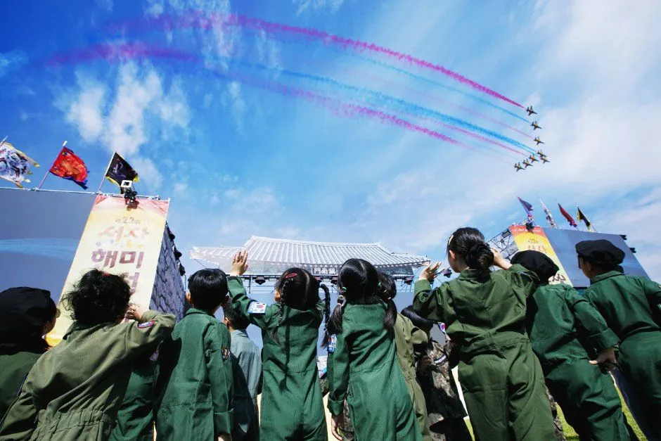
▲ 블랙이글스 에어쇼 관람 장면. 올해 에어쇼는 10일 오후 1시다. 사진=한국관광공사(과거 축제 현장)
3. 자차 접근 — 주차와 셔틀, 확인된 것과 아닌 것
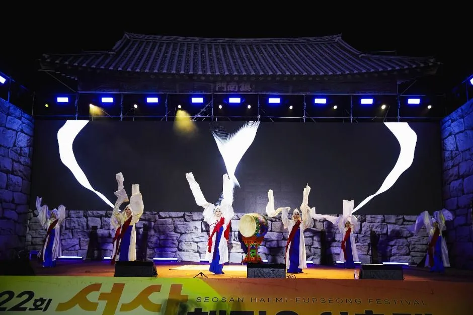
▲ 성벽 앞 무대 공연. 읍성 안팎에 무대가 나뉘어 인파도 분산된다. 사진=한국관광공사(과거 축제 현장)
보도에서 확인되는 교통 관련 사항은 많지 않다. 서산시는 인근 대학·학교 주차 공간을 최대한 확보하고 셔틀버스를 투입한다고 밝혔다. 뉴스프리존 보도(10월 개최 기사)에는 "셔틀버스 26대가 밤 10시 30분까지 운행", "안전관리 인력 254명과 대피로 3곳"이 적혀 있어 원문을 직접 확인했다. 방문객 동선은 진남문·동문·서문 세 성문으로 나눠 쏠림을 줄인다는 설명이다. 내외경제TV도 셔틀버스 26대 투입을 전했다. 인근 학교 이름과 위치는 10월 5일 기준 어느 보도에서도 확인하지 못했다. 동문 주차장 일원에는 "해미 디펜스 로드"(요격미사일 실물 모형, 거북차 미디어 사생대회 등)가 들어서는 것으로 보도됐다. 즉 동문 주차장 일부는 전시 공간으로 쓰일 가능성이 있다.
| 항목 | 확인된 내용 | 확인하지 못한 내용 |
|---|---|---|
| 셔틀버스 | 26대 투입, 밤 10시 30분까지 운행(뉴스프리존·내외경제TV) | 노선, 배차 간격, 승하차 위치, 요금 |
| 임시주차장 | 인근 대학·학교 주차 공간 확보(보도 기준) | 학교 이름, 위치, 수용 대수 |
| 상설 주차장 | 충남관광 페이지는 "주차 무료"로 안내. 동문·서문·남문 주차 안내가 공식 누리집에 있다고 보도됨(누리집은 열람 못 함) | 주차장별 수용 대수와 위치 |
| 교통통제 | 확인하지 못함 | 통제 구간과 시간 |
| 안전 관리 | 안전관리 인력 254명, 대피로 3곳(뉴스프리존) | — |
✅ 자차 방문자 요령(일반적인 판단)
· 개막일 저녁(9일), 에어쇼가 있는 10일 낮, 토요일 야간에 인파가 몰릴 가능성이 크다. 지난 축제 규모를 기준으로 한 추정이다.
· 읍성 바로 앞 주차에 집착하기보다 셔틀 승차장이 있는 임시주차장을 먼저 찾는 편이 시간이 덜 든다. 위치는 공식 누리집 공지 확인.
· 야간 드론쇼를 볼 계획이면 귀가 차량이 한꺼번에 빠지는 시간대를 피하고, 셔틀 막차(22:30)를 기준으로 일정을 짜자.
4. 자차 동선과 일자별 혼잡 시간대 — 한글날 연휴가 변수
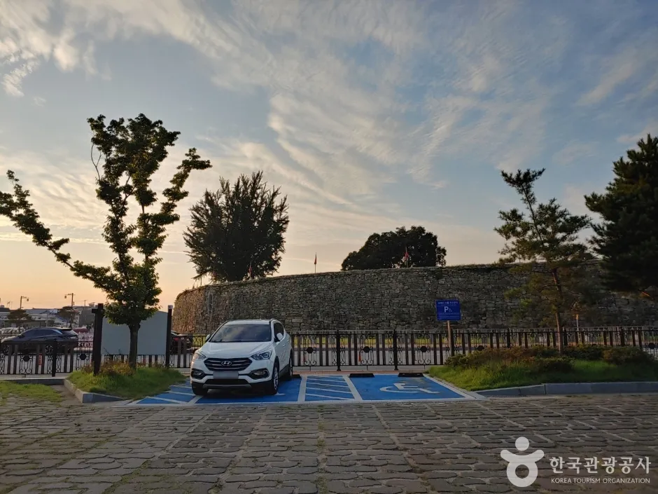
▲ 성벽 옆 주차 구역의 평상시 모습. 축제 기간에는 일부가 전시·행사 공간으로 쓰일 수 있다. 사진=한국관광공사(평상시 촬영)
서산시 문화관광 페이지는 자가운전 경로를 서해안고속도로 해미 IC 경유로 안내하고, 내비 목적지는 "해미읍성(서산시 해미면 남문2로 143)"이다. IC에서 읍성까지의 소요 시간과 서산 IC 이용 경로의 소요 시간은 공식 자료에서 확인하지 못했다. 축제 기간에는 같은 거리도 평소보다 오래 걸리므로, 출발 전 내비 실시간 소요 시간을 확인하는 편이 정확하다. 확인된 교통 대책은 앞서 정리한 셔틀·임시주차 외에는 없어, 아래 혼잡 예상은 지난 회차 방문 규모와 프로그램 시간을 바탕으로 한 추정이다.
| 일자 | 몰릴 가능성이 큰 시간 | 이유 | 자차 대응 |
|---|---|---|---|
| 9일(금, 한글날) | 오후~저녁 7시 개막식, 개막식 직후 귀가 시간 | 공휴일 연휴 첫날, 개막 공연과 야간 프로그램 | 낮에 일찍 도착해 주차, 귀가는 셔틀 막차(22:30) 전에 여유 있게 |
| 10일(토) | 오후 1시 에어쇼 전후, 해 진 뒤 야간 | 에어쇼와 마당극·K-street, 팔폭 등 낮 프로그램이 겹침 | 12시 이전 도착, 야간 방문은 해 지기 전에 주차 완료 |
| 11일(일) | 오후 공연 이후 귀가 시간 | 마지막 날 오후 귀경 차량이 한꺼번에 빠짐 | 오전 방문 후 오후 일찍 출발하거나 야간 귀가 시간대를 피함 |
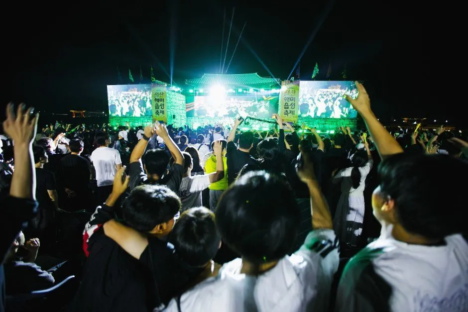
▲ 야간 무대 앞에 인파가 몰린 과거 축제. 해가 진 뒤에는 읍성 안팎이 가장 붐빈다. 사진=한국관광공사(과거 축제 현장)
| 상황 | 준비 |
|---|---|
| 비·강풍 | 에어쇼와 드론쇼는 기상에 영향받는 야외 프로그램이므로 변경·취소 여부는 출발 전 공식 누리집 공지로 확인(변경 기준은 확인하지 못함) |
| 읍성 안 이동 | 잔디마당과 흙길이 많아 방수 신발과 우비를 권장하고, 돗자리는 비닐 소재가 편하다 |
| 가을 밤 기온 | 야간 프로그램이 길어 겉옷을 챙기고, 휴대폰 '호패' 입장을 쓰려면 보조배터리 지참 |
5. 읍성 안 도보 동선 — 낮과 밤으로 나누기
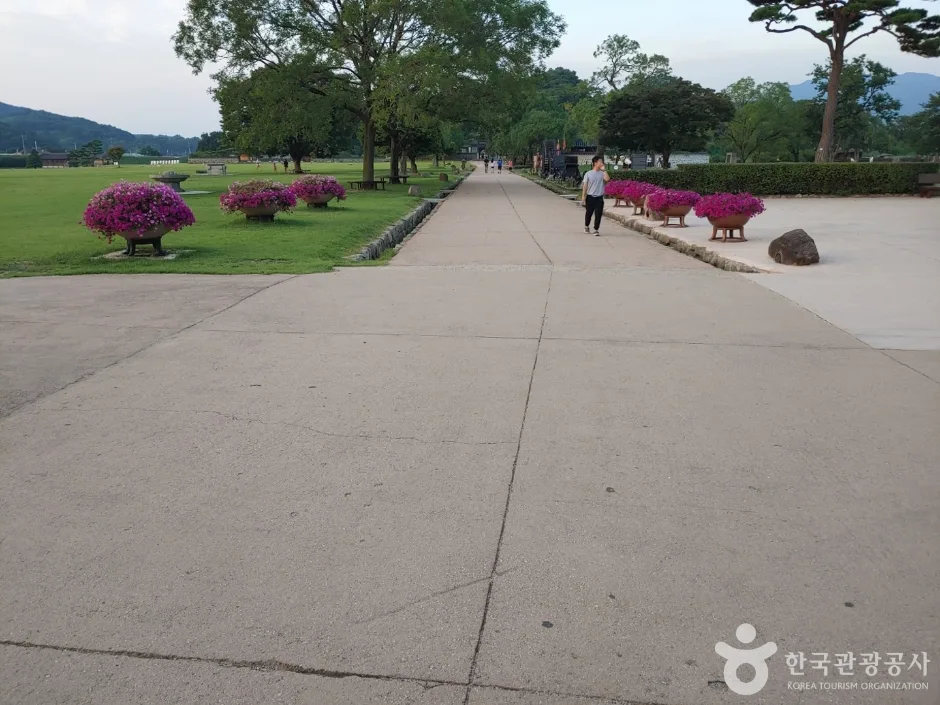
▲ 읍성 안쪽은 넓은 잔디와 보행로가 이어진다. 축제 때는 이 길이 행사장이 된다. 사진=한국관광공사(과거 촬영)
해미읍성은 평지에 지은 읍성이라 걷는 난도는 낮다. 확인된 공연 장소를 기준으로 낮과 밤 동선을 이렇게 잡을 수 있다(제안이며, 실제 배치는 현장 안내도 확인).
| 시간대 | 추천 동선 | 비고 |
|---|---|---|
| 오후 1시 | 에어쇼 관람(10일) | 하늘이 트인 자리 선점 |
| 오후 2시 | 해미 놀이마당 마당극 | 10~11일 |
| 오후 4시 30분 | 달마루 HAEMI in K-street | 10~11일 |
| 해 진 뒤 | 성벽 미디어 파사드, 드론쇼 | 회차 시각은 현장 안내 확인 |
| 동헌뜰 | 무형유산 시연, 해미성찬 팔폭(유료) | 팔폭은 하루 60명 한정 |
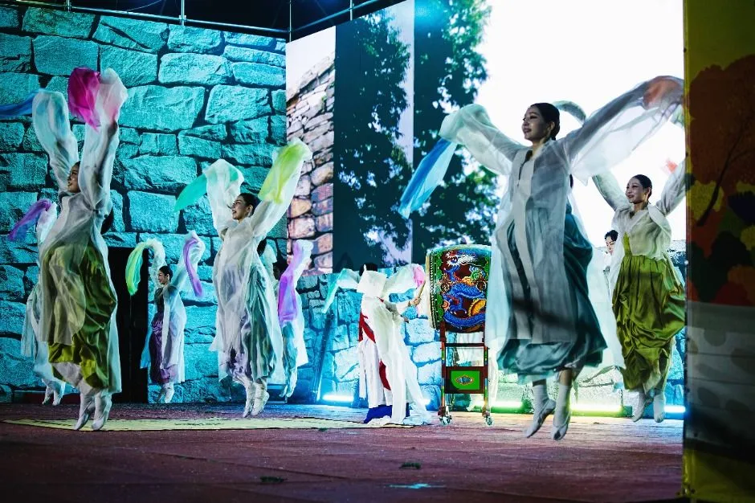
▲ 성벽을 배경으로 한 야간 무용 무대. 달마루·놀이마당 공연도 이런 분위기로 이어진다. 사진=한국관광공사(과거 축제 현장)
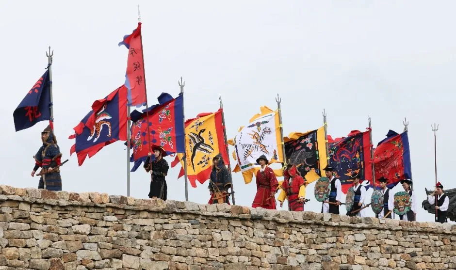
▲ 성벽 위로 깃발이 늘어선 장면. 낮 행렬 재현은 사진 찍기 좋다. 사진=한국관광공사(과거 축제 현장)
6. 먹거리와 체험 — 유료 프로그램 주의
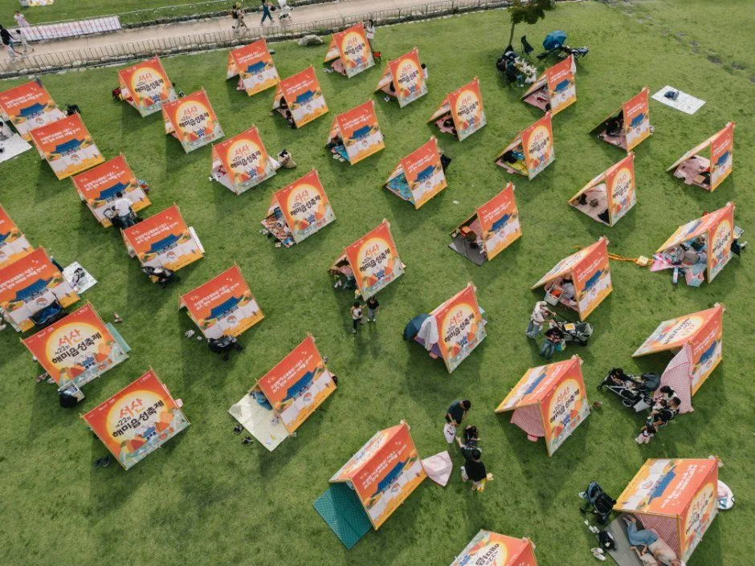
▲ 잔디밭에 텐트를 놓고 쉬는 피크닉 존(과거 축제). 돗자리를 챙기면 편하다. 사진=한국관광공사(과거 축제 현장)
"해미성찬 팔폭"은 미슐랭 셰프 김성운, 한식 대가 김지영이 서산 간척지 햅쌀·서산한우·간월도 어리굴젓 등으로 구성하는 유료 프라이빗 다이닝이다. 하루 60명만 받는다는 점 외에 가격과 예약 방법은 확인하지 못했다. 서산 특산주(딸기 스파클링와인, 들국화주, 생강주 등) 소개도 있었다. 한국관광공사 축제 페이지에는 먹거리 부스 50여 곳이 소개돼 있으나 올해 입점 현황과 메뉴·가격은 확인하지 못해 가격은 싣지 않았다. 뉴스프리존은 55개 팀이 공연·체험·지역 농특산물로 참여한다고 전했다. 운전자는 시음 후 운전하지 않도록 주의해야 한다.
ℹ️ 지난해와 헷갈리지 않기
일부 사이트에는 22회(2025년 9월 26~28일) 정보가 섞여 있다. 올해는 10월 9~11일이다.
7. 인근 코스 — 읍성 안 회화나무와 간월암
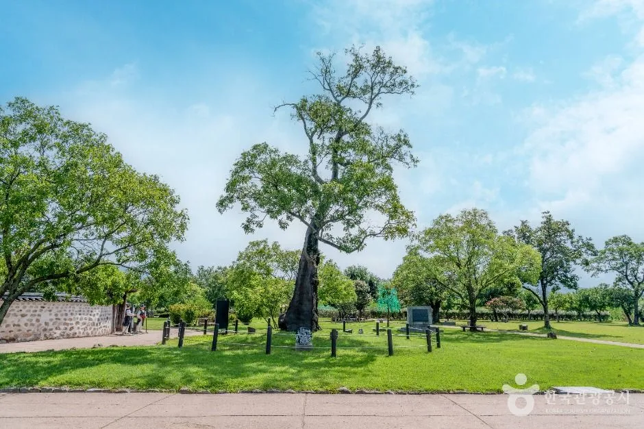
▲ 읍성 안 회화나무 일대는 천주교 박해의 역사가 서린 곳으로 알려져 있다. 사진=한국관광공사(과거 촬영)
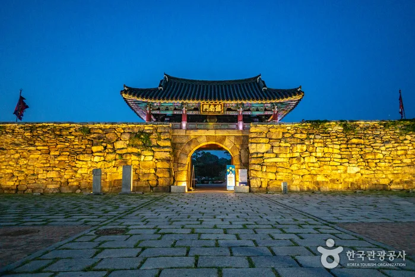
▲ 해질 무렵 조명이 켜진 해미읍성 성문. 성문이 밝혀지는 시간이 사진 포인트다. 사진=한국관광공사(과거 촬영)
해미읍성 안 회화나무 일대는 천주교 박해와 관련된 장소로 알려져 있어 축제 전후 한 바퀴 돌아보기 좋다. 서산 간월암은 물때에 따라 접근이 달라지므로 서산 간월암·해미읍성 물때 가이드를 먼저 보고 일정을 잡자. 축제 기간에는 읍성이 혼잡하니 간월암을 낮에 먼저 들르고 해미로 이동하는 순서도 방법이다(제안). 서산 AI·한우 먹거리는 올해 확인된 정보가 없어 다루지 않았다.
충남의 다른 가을 코스는 아산 곡교천 은행나무길, 금산 인삼축제 하루 코스, 공주 공산성·무령왕릉도 함께 볼 만하다. 서해안 방면은 태안 안면도 대하축제, 홍성 남당항 대하축제 정보도 참고할 수 있다. 같은 연휴 축제 주차 요령은 세종한글축제 주차 가이드와 비교해 볼 만하다. 간월암은 해미읍성에서 차로 20분 안팎이라는 기존 가이드 기준이며, 함께 가려면 낮에 간월암을 먼저 보고 오후에 읍성으로 이동하는 쪽이 주차 경쟁이 심한 정오 전후를 피하기 좋다(제안).
| 장소 | 내비 검색어 | 비고 |
|---|---|---|
| 해미읍성 | 해미읍성(서산시 해미면 남문2로 143) | 축제장 |
| 간월암 | 간월암(서산) | 물때 확인 필수 |
✅ 출발 전 체크리스트
· 기간 10/9~11, 장소 해미읍성(남문2로 143), 입장 무료
· 시간표: 개막식 9일 19:00, 에어쇼 10일 13:00, 마당극 14:00, K-street 16:30(10~11일)
· 셔틀 26대, 밤 22:30까지, 노선·승차장은 공식 누리집 확인
· 주차 수용·요금, 교통통제 구간은 미확인, 일찍 출발
· 문의 서산문화재단 041-660-2697, 축제 사무국 041-681-3560
8. 요약
제23회 서산해미읍성축제는 10월 9~11일 해미읍성 일원에서 열리며 입장은 무료다. 개막식은 9일 저녁 7시, 에어쇼는 10일 오후 1시, 마당극과 K-street 공연은 10~11일에 있고 야간에는 1,000대 드론쇼와 성벽 미디어 파사드가 이어진다.
자차 방문객은 셔틀 26대(밤 10시 30분까지)와 인근 학교 임시 주차를 활용하는 것이 현실적이다. 9일은 한글날 공휴일이라 연휴 내내 혼잡이 예상된다. 주차장별 수용 대수, 임시주차 학교 위치, 셔틀 노선, 교통통제 구간은 확인하지 못했으므로 출발 전 공식 누리집(haemifest.com)을 확인하자.